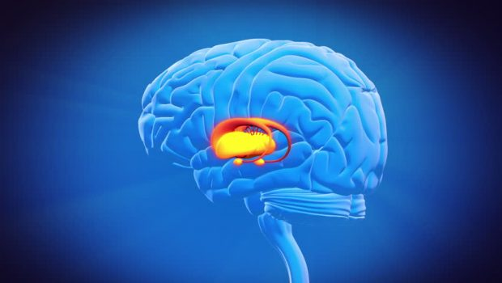

Essenciais da Neurociência: entenda como funciona o cérebro humano
Data e hora
Introdução
Das diferentes partes que compõem o encéfalo, o cérebro é sem dúvida a mais importante. Destinado a receber as impressões sensitivas bem como a elaborar as reações motoras voluntárias, cabe-lhe ainda a sede das operações psíquicas mais complexas e elevadas.
Todas as regiões em geral têm muitas funções e elas dependem das interações com outras áreas do cérebro. A maioria das estruturas do cérebro é bilateral, com correspondentes idênticos nos hemisférios esquerdo e direito.
Neocórtex
O Neocórtex contém centros para cognição e outras operações mentais complexas. As áreas subcorticais são onde ocorrem processos mentais mais básicos. Logo abaixo do cérebro pensante, e se projetando para o córtex, está o sistema límbico, a principal área do cérebro para a emoção.
Essas áreas também são encontradas nos cérebros de outros mamíferos. As partes mais antigas do subcórtex estendem-se abaixo, até o tronco encefálico, conhecido como “cérebro reptiliano” porque partilhamos desta arquitetura básica com os répteis.
O córtex cerebral é a maior parte do cérebro humano, e está associado com funções cerebrais superiores, como o pensamento e a ação. O córtex cerebral é dividido em quatro seções, chamadas lóbulos: Frontal, Temporal, Parietal e Ociptal.
Cerebelo
A estrutura do cerebelo é semelhante à do cérebro, já que tem dois hemisférios e tem um córtex altamente dobrado, o qual está associado com a regulação e a coordenação dos movimentos, à postura e ao equilíbrio.
Funções do Cerebelo
Organiza a informação complexa recebida pelo cérebro, e recebe informação a partir do ouvido interno, dos nervos sensoriais e do sistema visual auditivo.
Coordena os movimentos motores e os processos de memória e aprendizagem básica.
Desempenha um papel fundamental na coordenação dos movimentos voluntários motores, do equilíbrio e do tônus muscular.
Sistema Límbico
O Sistema Límbico, também é chamado de sistema emocional. Foi o primeiro mecanismo desenvolvido ao longo do nosso processo evolutivo para nos tornar capazes de antecipar situações que precisam de respostas comportamentais adaptativas, como reconhecer de forma antecipada um determinado risco iminente por exemplo.
O Sistema Límbico é composto por estruturas do mesencéfalo (substância negra, substância cinzenta, ATV – Área Tegmentar Ventral), diencéfalo (hipotálamo e tálamo) e telencéfalo (hipocampo, corpo amigdaloide, núcleo acumbente, giro do cíngulo, córtex piriforme e córtex pré-frontal ventromedial).
Tais estruturas coordenam as respostas hormonais, comportamentais e fisiológicas condizentes com os nossos distintos estados emocionais.
Tronco Cerebral
Sua mais importante função é controlar e regular os processos motores e sensoriais do corpo. As funções do tronco cerebral incluem atenção, estado de alerta, a respiração, a frequência cardíaca, a pressão arterial, transmissão de informações e sinais entre os nervos periféricos e a medula espinhal com o cérebro superior e outras funções autônomas, como a salivação, a digestão, a sudorese, a contração e a dilatação das pupilas e a urina, entre outras.
Maraísa Lima – Muito se fala sobre a diferenciação do cérebro humano em relação ao dos animais, devido ao Neocórtex. Ter essa área desenvolvida mais recentemente torna os humanos superiores?
Dra. Cássia Oliveira – Somos realmente muito parecidos biologicamente com os nossos “primos”, os grandes primatas antropoides. A biologia molecular descobriu, por exemplo, que 98% do genoma do chimpanzé é igual ao nosso.
Em relação ao comportamento, todos os antropoides demonstram enorme capacidade de adaptação ao ambiente através da aprendizagem, uma vida social estruturada baseada na tribo, o comportamento sexual e reprodutivo, e complexas formas de intercomunicação intra-específica, dentre outras similaridades.
Imagem de um Cerebro
O Neocórtex Cerebral dotou-nos de propriedades que não existem, ou existem de forma primitiva em outros antropoides. É no Neocórtex que possuímos os mais altos níveis de análise sintética. É lá que a nossa visão do mundo é analisada, planeada e programada para executarmos uma ação.
Porém, o ser humano se distingue dos outros primatas por causa de uma característica mental muito significativa:
Gradativamente desenvolvemos um conjunto distinto de capacidades de modificarmos qualquer comportamento, mesmo que instintivo, de maneira a torná-lo mais evoluído e eficaz para a nossa sobrevivência.
Quanto mais desenvolvermos esse conjunto de capacidades a SEGUIR, mais evoluídos nos tornaremos:
O gerenciamento do controle dos impulsos, a capacidade de lidar com nossas emoções, particularmente emoções aflitivas e sentimentos fortes, localizadas em áreas específicas no cérebro (Área cingular anterior);
A autoconsciência que é a capacidade de estarmos conscientes de nossos próprios sentimentos e entendê-los (amígdala direita localizada no mesencéfalo); A capacidade de entender e sentir nossas próprias emoções é essencial para o entendimento e a empatia com as emoções dos outros;
A empatia – a consciência das emoções nas outras pessoas. (Córtex somatossensorial direito, córtex insular);
A capacidade de resolver problemas pessoais e interpessoais, de controlar nossos impulsos, de expressar nossos sentimentos com eficácia e de nos relacionarmos bem com os outros. (Área orbitofrontal/ventromedial).
A nossa missão como neurocientistas é promover o desvelamento da enorme complexidade do sistema nervoso, para que o uso das funções intelectuais superiores estruturais e funcionais nos permitam treinar a mente e esculpir o cérebro para ter uma vida mais serena, repleta de bem-estar, sabedoria e relacionamentos gratificantes. Quanto mais a espécie humana utilizar o dom de dominar o cérebro emocional e instintivo, por meio do cérebro racional, por meio da autogestão e autodomínio, mais humanos seremos.
Estudos da neurociência indicam que aproximadamente 87% a 90% de todas as nossas decisões são executadas pelo nosso inconsciente.
O sistema nervoso se organiza em circuitos automatizados justamente para produzir respostas muito rápidas, respostas-padrão, para que não tenhamos que pensar em tudo para responder ou agir, o que levaria muito mais tempo.
Se tivéssemos que pensar ao dar cada passo, dificilmente daríamos conta de fazer tantas coisas ao mesmo tempo. Como precisamos de agilidade nas escolhas, às vezes acabamos decidindo de forma inconsciente, o que significa atender a nossa vontade, mas sem ter consciência das consequências.
Dessa maneira, deixamos para a área racional situações novas, que ainda não temos as nossas programações automáticas desenvolvidas.
Relação entre razão e emoção
O sistema emocional e as áreas corticais do nosso cérebro são extremamente influentes na construção do comportamento e das tomadas de decisão.
A relação entre essas duas áreas determina muito do que somos e como nos comportamos. Temos muito mais atitudes movidas pela emoção e automatismo do que ações regidas pela racionalidade e consciência.
Sabe aquela sensação de não agir de acordo com o que você gostaria? Quando você diz algo sem pensar e magoa alguém, quando age impulsivamente e se arrepende do que fez, quando compra algo e depois percebe que nem vai usar?
Nesses momentos, a sensação é que você não está no controle de sua vida, não é? Pois é o “eu automático e inconsciente” é quem está se manifestando.
Às vezes parece que estamos em um carro sem motorista correndo sem direção, sem o mínimo controle. São as emoções desenfreadas se manifestando.
Definição de emoção
A emoção é um processo involuntário, rápido, desconectado da nossa intencionalidade, sem reflexão sob o qual não temos muito controle. Ela vem automaticamente a partir dos estímulos do momento, seguindo padrões que foram se estabelecendo em nosso cérebro ao longo de nossas vidas.
Uma balança com um coração no lado esquerdo e um cérebro no lado direito
Dessa forma, são criados padrões neurais que nos induzem a agir de uma determinada maneira pelo que aprendemos com nossas experiências anteriores e que não necessariamente combinam com o que desejamos racionalmente ser.
No entanto, se formos capazes de reconhecer as nossas emoções e nomeá-las, conseguimos detectá-las mais facilmente, descobrindo por que foram provocadas.
Assim acontece a regulação e construção de outros circuitos e o melhor controle dos nossos pensamentos e comportamentos, construindo outros circuitos e diminuindo as chances de ter atitudes impulsivas.
Definição de emoção
A emoção é um processo involuntário, rápido, desconectado da nossa intencionalidade, sem reflexão sob o qual não temos muito controle. Ela vem automaticamente a partir dos estímulos do momento, seguindo padrões que foram se estabelecendo em nosso cérebro ao longo de nossas vidas.
Dessa forma, são criados padrões neurais que nos induzem a agir de uma determinada maneira pelo que aprendemos com nossas experiências anteriores e que não necessariamente combinam com o que desejamos racionalmente ser.
No entanto, se formos capazes de reconhecer as nossas emoções e nomeá-las, conseguimos detectá-las mais facilmente, descobrindo por que foram provocadas.
Assim acontece a regulação e construção de outros circuitos e o melhor controle dos nossos pensamentos e comportamentos, construindo outros circuitos e diminuindo as chances de ter atitudes impulsivas.
Sistema emocional e o comportamento
O sistema emocional e comportamento são inseparáveis, há uma estreita relação entre eles. Para cada processamento emocional que ocorre dentro do Sistema Límbico, teremos um correlato comportamental que se exprime por meio de uma expressão facial, expressão corporal, mudanças em nossa fisiologia visceral.
O cérebro e a tomada de decisões
A capacidade de tomar decisões sensatas envolve calcular prós e contras.
Uma pessoa pensando
Primeiro, o cérebro avalia o “valor da meta” – a recompensa esperada como resultado líquido, ou a recompensa menos o custo. Por fim, faz uma previsão da probabilidade de a decisão ter como resultado a recompensa vislumbrada, que pode ser comparada ao resultado efetivo, gerando uma “predição de erros”.
Quanto mais complexo um problema, mais as áreas frontais do cérebro estão envolvidas.
Se a decisão for feita em um contexto complexo, serão ativadas as áreas do Córtex Pré-frontal Lateral relacionadas à comparação de situações passadas e presentes.
Por fim, a área mais frontal do cérebro, o Córtex Orbitofrontal Medial que correlaciona-se com valores de metas é envolvida juntamente com a atividade no estriado ventral – parte do núcleo caudado e do putâmen – que correlacionam-se com a predição de erros, combinando em um único plano integrado todas as informações reunidas até aquele momento.
Para tomar uma boa decisão, temos de ter sentimentos sobre os nossos pensamentos, conectar os prós e contras emocionais, nos organizar em prioridades.
Tais sentimentos vêm dos centros emocionais no mesencéfalo, interagindo com uma área específica no Córtex Pré-Frontal.
Gânglios da base e a nossa sabedoria de vida
Abaixo no cérebro, por baixo das áreas límbicas, há uma rede neural chamada gânglios da base. Essa é uma parte do cérebro muito primitiva, mas faz algo extraordinariamente importante para a navegação no mundo moderno.

Imagem de um cérebro
Conforme atravessamos cada situação da vida, os gânglios da base extraem regras de decisão: quando fiz isso, funcionou bem; quando disse aquilo, deu algo errado; e assim por diante. Nossa sabedoria de vida acumulada está armazenada nesse circuito primitivo.
No entanto, quando enfrentamos uma decisão, é nosso córtex verbal que gera nossos pensamentos sobre ela.
Os gânglios da base além de ter uma ligação direta com as áreas verbais, também têm conexões muito ricas com o trato gastrointestinal, as vísceras.
Portanto, ao tomar uma decisão, um senso visceral de ela ser certa ou errada também é uma informação importante.
A resposta à pergunta “o que estou prestes a fazer serve a meu sentido de propósito, significado ou ética?” não nos vem sem palavras; nos vem pela via desse sentido visceral.
A ciência comprova e identifica a existência de seis emoções básicas, independentemente da etnia ou da cultura: medo, raiva, tristeza, surpresa, repulsa e alegria. Elas não estão ligadas ao ambiente, ou à influência da cultura, seja a mais ancestral ou moderna.
Todos os seres humanos são capazes de expressar essas emoções na face. Podemos controlar o modo como demonstramos, mas as emoções sempre estarão lá. São reações automáticas, microexpressões.
Assim como as sete notas musicais dão origem a todos os acordes, posso arriscar dizer que os seres humanos são compostos por emoções e sentimentos em constante conflito entre o que vem do racional, do conhecimento e da reflexão.
Emoção x Sentimento
A evolução da consciência se fez presente na vivência subjetiva da emoção, o sentimento. A reação emocional é formada por três ligações: a atitude física, a expressão facial e o sentimento.
Imgem de dados com rosto
Uma emoção pressupõe uma reação intensa, é uma resposta mental e física específica. Já o sentimento surge e se prolonga no tempo sem a reação aguda da emoção. O Sentimento é a tomada de consciência da emoção que lhe deu origem.
Equilibrar razão e emoção é a alternativa para alcançar o bem-estar pessoal e o desempenho adequado no mundo social onde convivemos e interagimos com outras pessoas. Esse equilíbrio vai fazer a diferença nas nossas relações.